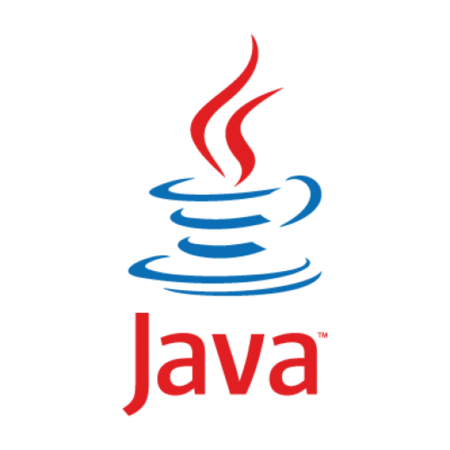
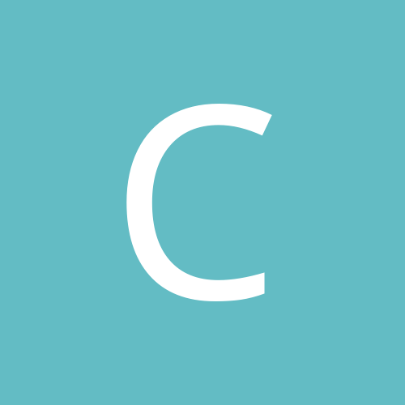
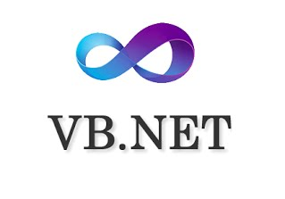

Reconocido por su legibilidad y simplicidad, Java es uno de los lenguajes de programación más adoptados: más 9 millones de
desarrolladores lo usan y está presente en 7 mil millones de dispositivos en todo el mundo. Desde 2001 se mantiene
en las primeras posiciones, llegando al número puesto número 2 como la más baja de todas en marzo de 2015. Su enorme
popularidad se debe a su poder de permanencia, cuestión que asegura el funcionamiento a largo plazo de las aplicaciones
que lo utilizan.

Creado entre 1969 y 1972 en los Laboratorios Bell, es uno de los más utilizados en el mundo. Si bien es ejecutado en la mayoría
de los sistemas operativos, es de propósito general, con lo cual es muy flexible. Es muy popular para el desarrollo
de aplicaciones de escritorio, como el conocido editor gráfico GIMP.

Conocido por el nombre “C Plus Plus”, este lenguaje de programación orientado a objetos surge como una continuación y ampliación
del C. Hay una gran cantidad de programas escritos en C++, como por ejemplo los paquetes de Adobe.

Un lenguaje de programación multiplataforma y multiparadigma, que también es de propósito general. Esto significa que soporta
la orientación a objetos, la programación imperativa y funcional. Su simpleza, legibilidad y similitud con el idioma
inglés lo convierten en un gran lenguaje ideal para principiantes.

También llamado “C Sharp”, este lenguaje de programación orientado a objetos fue desarrollado en el año 2000 por Microsoft
para ser empleado en una amplia gama de aplicaciones empresariales ejecutadas en el framework .NET. C Sharp es una
evolución del C y C++ que se destaca por su sencillez y modernidad.

Pasó del número 9 en junio de 2016 al sexto lugar en 2017. Es utilizado por una gran cantidad de personas a lo largo del
mundo que no cuentan con conocimientos profundos como desarrolladores, quienes encuentran en visual basic, además
de una sintaxis sencilla, la posibilidad de automatizar sus propios procesos y crear sus propias aplicaciones web.
Es visto como uno de los lenguajes más amigables para los que recién comienzan, sobre todo a comparación de C#.

Antes que nada, no confundir con Java. Son lenguajes distintos. Javascript es un lenguaje de programación que puede ser utilizado
para crear programas que luego son acoplados a una página web o dentro de programas más grandes. Sirve para crear
efectos y realizar acciones interactivas. Podemos ver funcionando este lenguaje en servicios como el chat, calculadoras,
buscadores de información y un sin fin de utilidades más.

Creado en 1994 por el programador canadiende Rasmus Lerdorf, nunca pretendió ser un lenguaje de programación, sino que fue
creado con la intención de contar con un conjunto de herramientas para el mantenimiento de las páginas web . Es de
fácil acceso para nuevos programadores y a su vez ofrece a los más experientes muchas posibilidades.

Creado Larry Wall, Perl es una sigla que significa Practical Extraction and Report Language. Es un lenguaje de propósito
general que sirve practicamente para todo, como puede ser la generación y tratamiento de ficheros, para analizar
datos y textos, y muchas otras cosas más. Si bien hay proyectos complejos y completos escritos en Pearl, son los
menos.